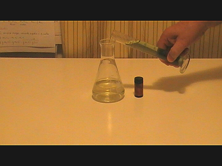
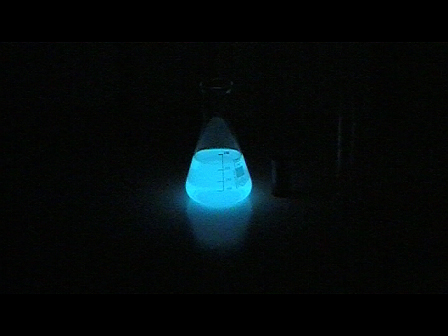

Eccoci finalmente al traguardo! Il Luminol è pronto e non resta che provare se la lunga sintesi in tre step ci ripaga con qualche fotone...
Anche questa volta mi attengo alla regola di parlare pochissimo di teoria (scrivendo "luminol" su Google c'è solo l'imbarazzo della scelta!) ma di descrivere invece la parte sperimentale, questa ben più difficile a reperirsi in rete soprattutto in italiano.
Copio e incollo solo questa bella tabella riassuntiva che mostra il procedere delle reazioni che avvengono quando il Luminol in ambiente alcalino incontra l'acqua ossigenata in presenza di un catalizzatore contenente ferro: l'ossidazione procede dal 5-amino-2,3-diidro-1,4-ftalazinadione (1) fino allo stadio finale (5) cioè all'acido 5-aminoftalico, con liberazione di azoto e di quel "hν" che è la chiave di tutto il discorso, cioè il fotone generatore di luce.
(Ved. bibliografia in Rete)
Tutti sanno che il luminol è utilizzato dagli investigatori sulla scena del crimine per individuare anche tracce minime di sangue.
L'investigatore usa soluzione di luminol e l'attivatore sotto forma di spray che spruzza in tutta l'area in esame. Il ferro presente nell'emoglobina di minime particelle residue di sangue catalizza la reazione chimica che porta alla luminescenza e rivela l'ubicazione del sangue stesso.
La quantità di catalizzatore necessario affinchè la reazione si verifichi è molto piccola rispetto alla quantità di reattivo, e ciò consente l'individuazione di tracce di sangue assolutamente invisibili ad occhio nudo.
Il bagliore azzurro dura circa 30 secondi ed è ovviamente visibile solo al buio, documentando la situazione con una fotografia a lunga esposizione.
Questo tipo di indagine è stata fatta per esempio nei celeberrimi delitti di Cogne e di Garlasco, non lontani nel tempo da quando è stato scritto questo post.
Ho detto anche troppo, passiamo al test:
Preparare la soluzione A e la soluzione B (le dosi sono puramente indicative, l'esperimento funziona sempre):
- la soluzione A è fatta sciogliendo circa 100 mg di Luminol in 3 ml di NaOH al 10% e portata poi a 150 ml con acqua
- la soluzione B è fatta sciogliendo circa 50 mg di potassio ferricianuro in 50 ml di acqua e aggiungendo 5 ml di acqua ossigenata al 3%
Il test vero e proprio va eseguito in compagnia perchè è molto suggestivo dato che non capita mai di vedere questo effetto, che è quindi completamente non-intuitivo per il pubblico presente:
- preparare una beuta da 250 ml contenente la soluzione A e, oscurata la stanza, aggiungere velocemente la soluzione B... godendosi lo spettacolo... mentre la compagnia stupisce!
Unico inconveniente: l'effetto intenso dura solo qualche decina di secondi, ma non si può aver tutto! La luminosità gradualmente decrescente persiste invece al buio completo molto più a lungo.
Ecco due immagini dell'esperimento:


Enjoy!
3 commenti